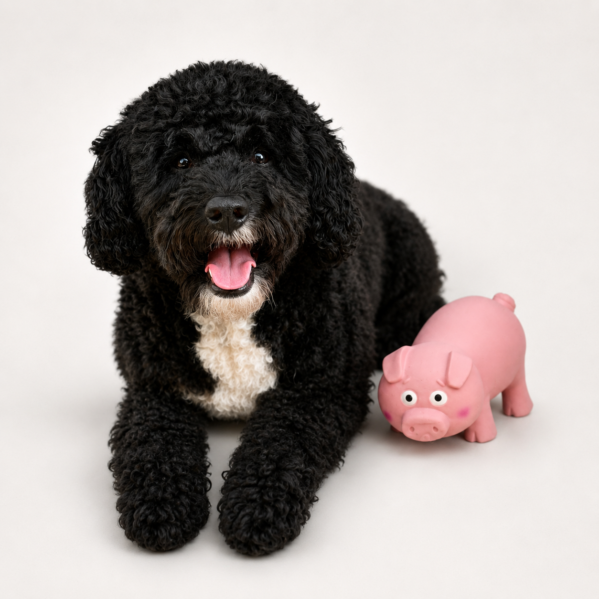

Product Review
Petface Latex Pig Review
A full executive assessment involving squeaking, retrieving, chasing, and absolutely no quiet time.

Quick Verdict
The Petface Latex Pig received immediate and extremely enthusiastic approval from management. Enzo spent the day squeaking it, demanding repeated throws, retrieving it, and then requesting that his hooman chase him around the workplace.
❤ What Enzo Loved
- Loud and satisfying squeaks suitable for important workplace announcements.
- Soft and flexible enough to carry comfortably.
- Excellent for throwing, retrieving, and refusing to return properly.
- Ideal for starting an unexpected game of “chase the CEO.”
! Things to Know
- Made from soft, non-toxic latex.
- Suitable for chewing and active play.
- Strong and flexible, but not indestructible.
- Best used with supervision and regular checks for wear or damage.
CEO’s Final Verdict
Following extensive squeak testing, repeated retrieval exercises, and several highly successful chase sessions, Enzo has approved the Petface Latex Pig for continued use.
The toy provides exercise, entertainment, and excellent opportunities for hooman participation.
This product has officially passed the Enzo Has Notes quality review.
Where to Buy
The official product link will be added here once the Enzo Has Notes affiliate department completes the necessary paperwork.